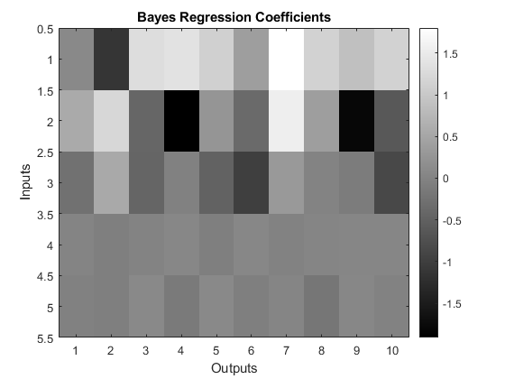
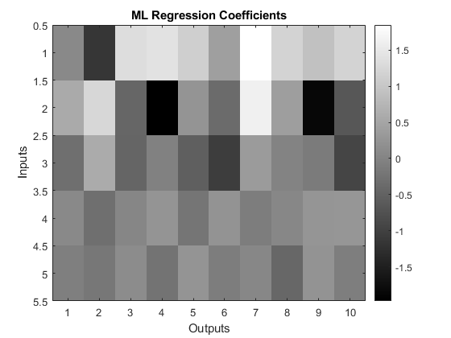

clear all
close all
N=100;
d=10;
p=5;
x=randn(N,p);
W=randn(p,d);
W(4:5,:)=0;
e=2*randn(N,d);
y=x*W+e;
options.pr = 'input';
options.verbose = 1;
evalc('mlm = spm_mlm_bayes (y,x,options);');
figure
imagesc(mlm.wmean);
colormap gray
colorbar
ylabel('Inputs');
xlabel('Outputs');
title('Bayes Regression Coefficients');
figure
imagesc(mlm.wml);
colorbar
ylabel('Inputs');
xlabel('Outputs');
colormap(gray);
title('ML Regression Coefficients');
disp(' ');
disp('Posthoc questions:');
disp(' ');
disp('Is regression coefficient 1,1 non zero ?');
con=zeros(p,d);
con(1,1)=1;
con_vec=con(:)';
disp('Log Evidence in favour of this hypothesis:');
logbf = spm_mlm_posthoc (mlm,con_vec)
disp('Is regression coefficient 4,6 non zero ?');
con=zeros(p,d);
con(4,6)=1;
con_vec=con(:)';
disp('Log Evidence in favour of this hypothesis:');
logbf = spm_mlm_posthoc (mlm,con_vec)
disp('Are regression coefficients 1,1 2,1 and 3,1 non zero ?');
w=zeros(p,d);
w(1,1)=1;w(2,1)=1;w(3,1)=1;
con_vec1 = spm_mlm_makecon (mlm,w);
disp('Log Evidence in favour of this hypothesis:');
logbf = spm_mlm_posthoc (mlm,con_vec1)
disp('If we define w1 = regression coefficients 1,1 2,1 and 3,1');
disp('and w2 = regression coefficients 1,2 2,2 and 3,2');
disp('Is w1 different to w2 ?');
w=zeros(p,d);
w(1,2)=1;w(2,2)=1;w(3,2)=1;
con_vec2 = spm_mlm_makecon (mlm,w);
con_vec_diff=con_vec2-con_vec1;
disp('Log Evidence in favour of this hypothesis:');
logbf = spm_mlm_posthoc (mlm,con_vec_diff)
Posthoc questions:
Is regression coefficient 1,1 non zero ?
Log Evidence in favour of this hypothesis:
logbf =
0.3952
Is regression coefficient 4,6 non zero ?
Log Evidence in favour of this hypothesis:
logbf =
0.2533
Are regression coefficients 1,1 2,1 and 3,1 non zero ?
Log Evidence in favour of this hypothesis:
logbf =
6.3078
If we define w1 = regression coefficients 1,1 2,1 and 3,1
and w2 = regression coefficients 1,2 2,2 and 3,2
Is w1 different to w2 ?
Log Evidence in favour of this hypothesis:
logbf =
18.7848
 